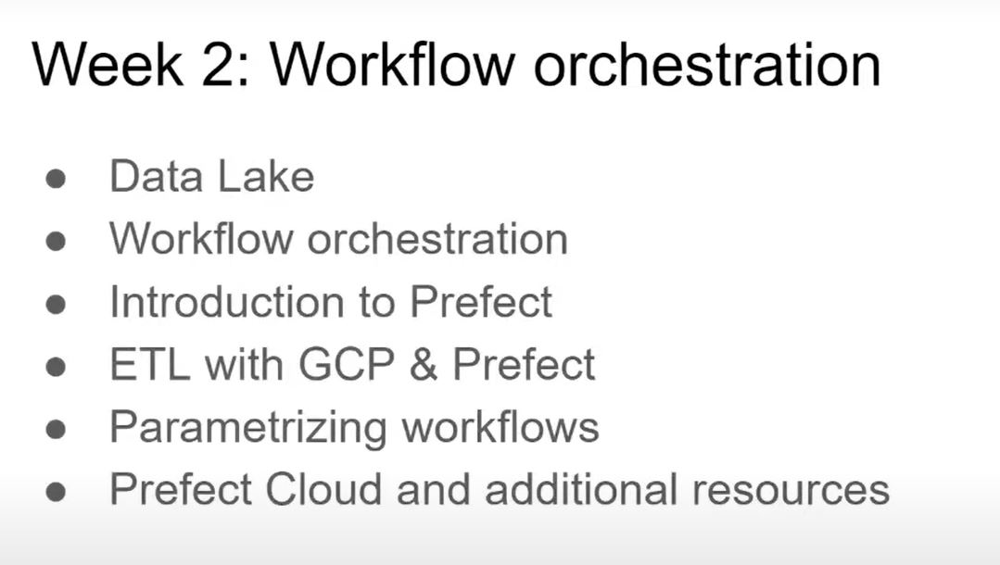
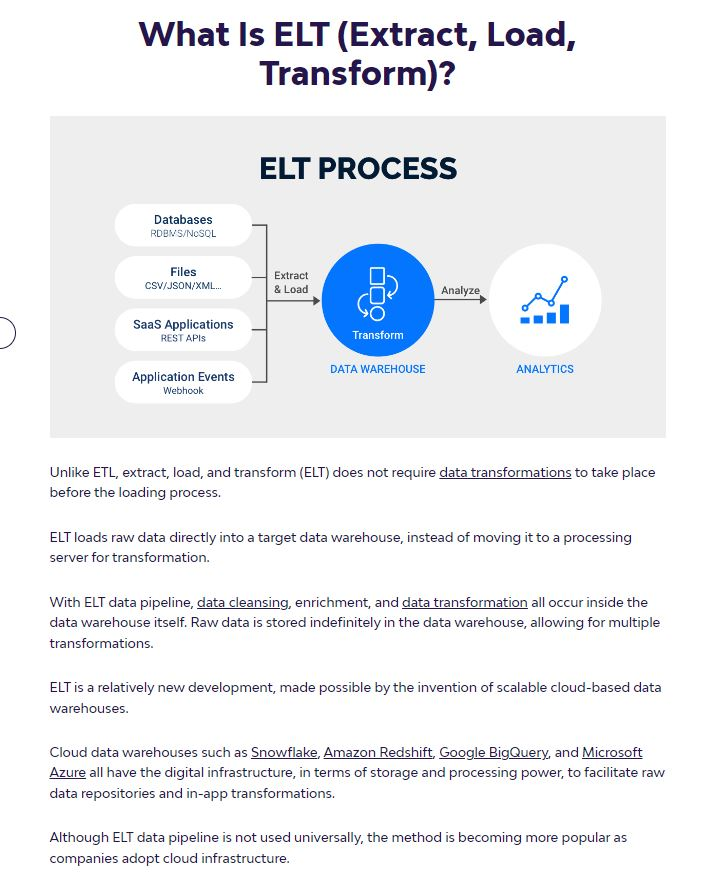
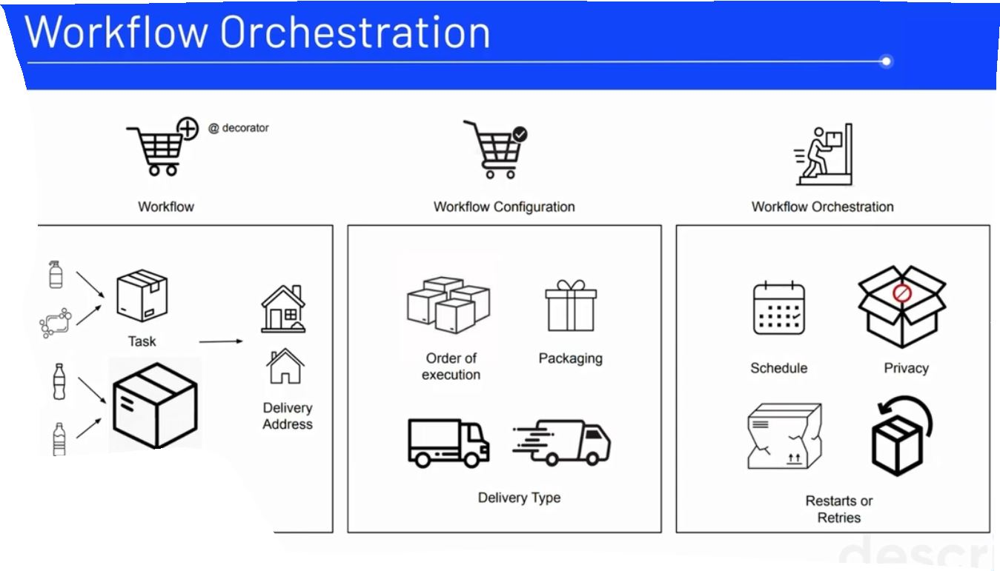
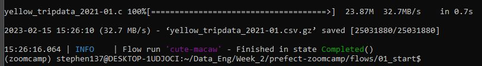
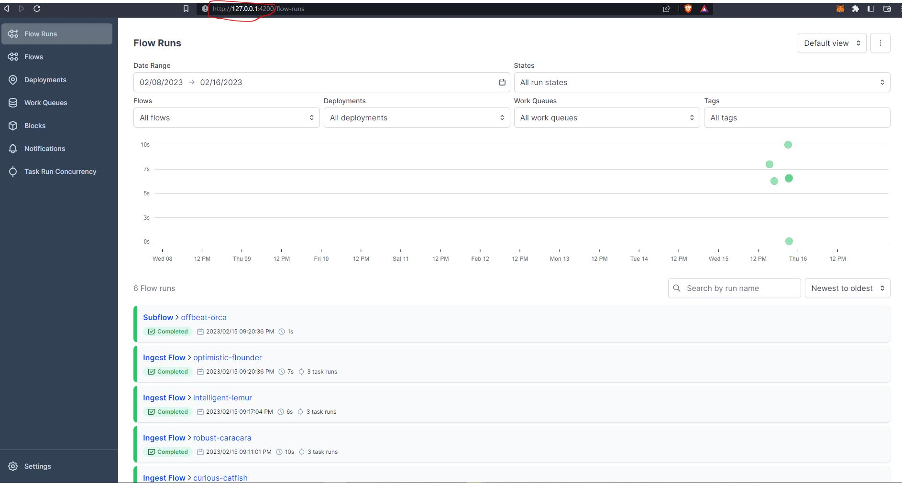
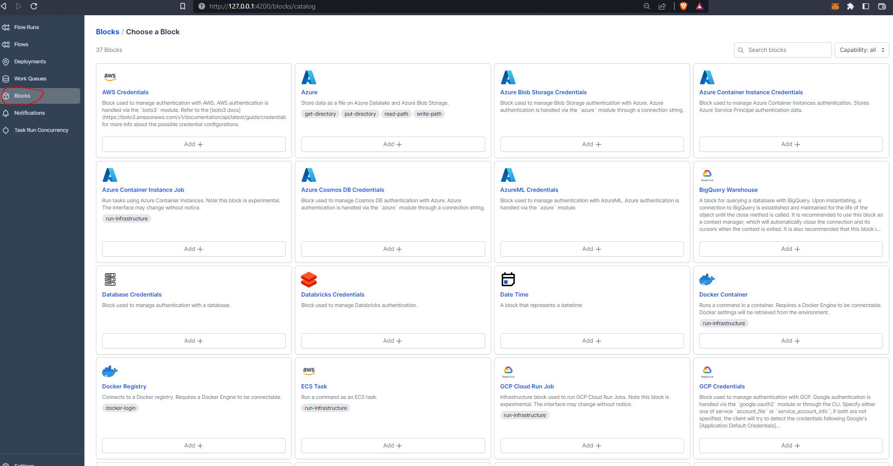
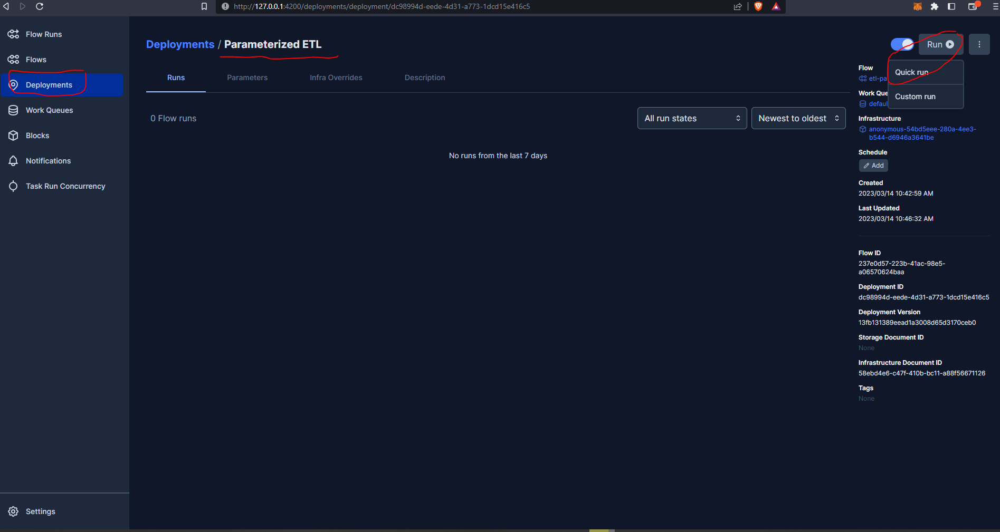
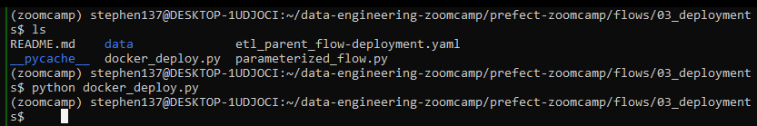

Week 2 - Workflow Orchestration
Just like a physical transport logistics system, it is important to have a smooth data logistics system. This process is also known as Workflow Orchestration. Workflow orchestration allows us to turn any code into a workflow that we can schedule, run and observe.
Core features:
- remote execution
- scheduling
- retries
- caching
- integration with external systems (APIs, databases)
- ad-hoc runs
- parametrization
- alert when something fails

2.1.1 Data Lakes


2.2.1 Introduction to Workflow Orchestration (data flow logistics)

2.2.2 Introduction to Prefect
Prefect is air traffic control for the modern data stack. Monitor, coordinate, and orchestrate dataflows between and across your applications. Build pipelines, deploy them anywhere, and configure them remotely. You might just love your workflows again.
In this session, we are going to take a look at a basic python script that pulls the yellow taxi data into a postgres db and then transforms that script to be orchestrated with Prefect.
Prefect is the modern open source dataflow automation platform that will allow us to add observability and orchestration by utilizing python to write code as workflows to build,run and monitor pipelines at scale.
First let’s clone the Prefect repo from the command line:
git clone https://github.com/discdiver/prefect-zoomcamp.gitNext, create a python environment :
conda create -n zoomcamp python=3.9 Once created we need to activate it:
conda activate zoomcampTo deactivate an environment use:
conda deactivate Note from the terminal that we are no longer running in base but our newly created zoomcamp environment:
Then install all package dependencies with:
pip install -r requirements.txtOnce that’s done we can check that has installed successfully and which version we have from the command line:
prefect versionI started Docker Desktop and executed these commands :
docker run -d
-e POSTGRES_USER=“root”
-e POSTGRES_PASSWORD=“root”
-e POSTGRES_DB=“ny_taxi”
-v $(pwd)/ny_taxi_postgres_data:/var/lib/postgresql/data
-p 5432:5432
postgres:13
Then, I executed the ingest_data.py file and ran with
python ingest_data.py
#!/usr/bin/env python
# coding: utf-8
import os
import argparse
from time import time
import pandas as pd
from sqlalchemy import create_engine
def ingest_data(user, password, host, port, db, table_name, url):
# the backup files are gzipped, and it's important to keep the correct extension
# for pandas to be able to open the file
if url.endswith('.csv.gz'):
csv_name = 'yellow_tripdata_2021-01.csv.gz'
else:
csv_name = 'output.csv'
os.system(f"wget {url} -O {csv_name}")
postgres_url = f'postgresql://{user}:{password}@{host}:{port}/{db}'
engine = create_engine(postgres_url)
df_iter = pd.read_csv(csv_name, iterator=True, chunksize=100000)
df = next(df_iter)
df.tpep_pickup_datetime = pd.to_datetime(df.tpep_pickup_datetime)
df.tpep_dropoff_datetime = pd.to_datetime(df.tpep_dropoff_datetime)
df.head(n=0).to_sql(name=table_name, con=engine, if_exists='replace')
df.to_sql(name=table_name, con=engine, if_exists='append')
while True:
try:
t_start = time()
df = next(df_iter)
df.tpep_pickup_datetime = pd.to_datetime(df.tpep_pickup_datetime)
df.tpep_dropoff_datetime = pd.to_datetime(df.tpep_dropoff_datetime)
df.to_sql(name=table_name, con=engine, if_exists='append')
t_end = time()
print('inserted another chunk, took %.3f second' % (t_end - t_start))
except StopIteration:
print("Finished ingesting data into the postgres database")
break
if __name__ == '__main__':
user = "root"
password = "root"
host = "localhost"
port = "5432"
db = "ny_taxi"
table_name = "yellow_taxi_trips"
csv_url = "https://github.com/DataTalksClub/nyc-tlc-data/releases/download/yellow/yellow_tripdata_2021-01.csv.gz"
ingest_data(user, password, host, port, db, table_name, csv_url)I then opened up pgcli
pgcli -h localhost -p 5432 -u root -d ny_taxiSo we can see that the data ingested into the postgres db. This is great but we had to manually trigger this python script. Using a workflow orchestration tool will allow us to add a scheduler so that we won’t have to trigger this script manually anymore. Additionally, we’ll get all the functionality that comes with workflow orchestation such as visibility, and resilience to the dataflow with automatic retries or caching and more.
Let’s transform this into a Prefect flow. A flow is the most basic Prefect object that is a container for workflow logic and allows you to interact and understand the state of the workflow. Flows are like functions, they take inputs, preform work, and return an output. We can start by using the @flow decoratorto a main_flow function.
- import prefect with
from prefect import flow, task - move everything that was in our
'if __name__ == '__main__'function to a newdef main():function (replace with a reference tomain() - add
@flow(name="Ingest Flow")above a newdef main()function - remove the
while Truepart of our original script
I started Docker Desktop and executed these commands:
docker run -d
-e POSTGRES_USER=“root”
-e POSTGRES_PASSWORD=“root”
-e POSTGRES_DB=“ny_taxi”
-v $(pwd)/ny_taxi_postgres_data:/var/lib/postgresql/data
-p 5432:5432
postgres:13
Then start the Prefect Orion orchestration engine using:
prefect orion startOpen another terminal window and run the following command:
prefect config set PREFECT_API_URL=http://127.0.0.1:4200/api
#!/usr/bin/env python
# coding: utf-8
import os
import argparse
from time import time
import pandas as pd
from sqlalchemy import create_engine
from prefect import flow, task # Added
def ingest_data(user, password, host, port, db, table_name, url):
# the backup files are gzipped, and it's important to keep the correct extension
# for pandas to be able to open the file
if url.endswith('.csv.gz'):
csv_name = 'yellow_tripdata_2021-01.csv.gz'
else:
csv_name = 'output.csv'
os.system(f"wget {url} -O {csv_name}")
postgres_url = f'postgresql://{user}:{password}@{host}:{port}/{db}'
engine = create_engine(postgres_url)
df_iter = pd.read_csv(csv_name, iterator=True, chunksize=100000)
df = next(df_iter)
df.tpep_pickup_datetime = pd.to_datetime(df.tpep_pickup_datetime)
df.tpep_dropoff_datetime = pd.to_datetime(df.tpep_dropoff_datetime)
df.head(n=0).to_sql(name=table_name, con=engine, if_exists='replace')
df.to_sql(name=table_name, con=engine, if_exists='append')
@flow(name="Ingest Flow") # Added
def main_flow():
user = "root"
password = "root"
host = "localhost"
port = "5432"
db = "ny_taxi"
table_name = "yellow_taxi_trips"
csv_url = "https://github.com/DataTalksClub/nyc-tlc-data/releases/download/yellow/yellow_tripdata_2021-01.csv.gz"
ingest_data(user, password, host, port, db, table_name, csv_url)
if __name__ == '__main__':
main_flow() # everything that was here moved into the new def main(): function 
We successfully completed a flow run.
Flows contain tasks so let’s transform ingest_data into a task by adding the @task decorator. Tasks are not required for flows but tasks are special because they receive metadata about upstream dependencies and the state of those dependencies before the function is run, which gives you the opportunity to have a task wait on the completion of another task before executing.
We can simplify this script and transform it into an extract and transform before we load the data into the postgres db. We start by breaking apart the large ingest_data function into multiple functions so that we can get more visibility into the tasks that are running or potentially causing failures.
Let’s create a new task called extract data that will take the url for the csv and the task will actually return the results. Since this is pulling data from external my system (something we may not control) we want to add automatic retries and also add a caching so that if this task has already been run, it will not need to run again.
import from prefect.tasks import task_input_hashIf we look at the data in PotsgreSQL we can see that on row 4, there is a passenger count of 0. So let’s do a transformation step to cleanse the data before we load the data to postgres. We can create a new task called transform_data for this.
Lastly, let’s actually simplify the original ingest_data() function and rename this to load_data()
#!/usr/bin/env python
# coding: utf-8
import os
import argparse
from time import time
import pandas as pd
from sqlalchemy import create_engine
from prefect import flow, task
from prefect.tasks import task_input_hash
from datetime import timedelta
@task(log_prints=True, tags=["extract"], cache_key_fn=task_input_hash, cache_expiration=timedelta(days=1))
def extract_data(url: str):
# the backup files are gzipped, and it's important to keep the correct extension
# for pandas to be able to open the file
if url.endswith('.csv.gz'):
csv_name = 'yellow_tripdata_2021-01.csv.gz'
else:
csv_name = 'output.csv'
os.system(f"wget {url} -O {csv_name}")
df_iter = pd.read_csv(csv_name, iterator=True, chunksize=100000)
df = next(df_iter)
df.tpep_pickup_datetime = pd.to_datetime(df.tpep_pickup_datetime)
df.tpep_dropoff_datetime = pd.to_datetime(df.tpep_dropoff_datetime)
return df
@task(log_prints=True)
def transform_data(df):
print(f"pre: missing passenger count: {df['passenger_count'].isin([0]).sum()}")
df = df[df['passenger_count'] != 0]
print(f"post: missing passenger count: {df['passenger_count'].isin([0]).sum()}")
return df
@task(log_prints=True, retries=3)
def load_data(user, password, host, port, db, table_name, df):
postgres_url = f'postgresql://{user}:{password}@{host}:{port}/{db}'
engine = create_engine(postgres_url)
df.head(n=0).to_sql(name=table_name, con=engine, if_exists='replace')
df.to_sql(name=table_name, con=engine, if_exists='append')
@flow(name="Ingest Flow")
def main_flow():
user = "root"
password = "root"
host = "localhost"
port = "5432"
db = "ny_taxi"
table_name = "yellow_taxi_trips"
csv_url = "https://github.com/DataTalksClub/nyc-tlc-data/releases/download/yellow/yellow_tripdata_2021-01.csv.gz"
raw_data=extract_data(csv_url)
data = transform_data(raw_data)
load_data(user, password, host, port, db, table_name, data)
if __name__ == '__main__':
main_flow()There’s a lot more we can add by sprinkling in Prefect to our flow. We could parameterize the flow to take a table name so that we could change the table name loaded each time the flow was run.
Flows can also contain other flows - and so we can create a sub-flow :
#!/usr/bin/env python
# coding: utf-8
import os
import argparse
from time import time
import pandas as pd
from sqlalchemy import create_engine
from prefect import flow, task
from prefect.tasks import task_input_hash
from datetime import timedelta
@task(log_prints=True, tags=["extract"], cache_key_fn=task_input_hash, cache_expiration=timedelta(days=1))
def extract_data(url: str):
# the backup files are gzipped, and it's important to keep the correct extension
# for pandas to be able to open the file
if url.endswith('.csv.gz'):
csv_name = 'yellow_tripdata_2021-01.csv.gz'
else:
csv_name = 'output.csv'
os.system(f"wget {url} -O {csv_name}")
df_iter = pd.read_csv(csv_name, iterator=True, chunksize=100000)
df = next(df_iter)
df.tpep_pickup_datetime = pd.to_datetime(df.tpep_pickup_datetime)
df.tpep_dropoff_datetime = pd.to_datetime(df.tpep_dropoff_datetime)
return df
@task(log_prints=True)
def transform_data(df):
print(f"pre: missing passenger count: {df['passenger_count'].isin([0]).sum()}")
df = df[df['passenger_count'] != 0]
print(f"post: missing passenger count: {df['passenger_count'].isin([0]).sum()}")
return df
@task(log_prints=True, retries=3)
def load_data(user, password, host, port, db, table_name, df):
postgres_url = f"postgresql://{user}:{password}@{host}:{port}/{db}"
engine = create_engine(postgres_url)
df.head(n=0).to_sql(name=table_name, con=engine, if_exists='replace')
df.to_sql(name=table_name, con=engine, if_exists='append')
@flow(name="Subflow", log_prints=True)
def log_subflow(table_name:str):
print("Logging Subflow for: {table_name}")
@flow(name="Ingest Flow")
def main_flow(table_name: str):
user = "root"
password = "root"
host = "localhost"
port = "5432"
db = "ny_taxi"
csv_url = "https://github.com/DataTalksClub/nyc-tlc-data/releases/download/yellow/yellow_tripdata_2021-01.csv.gz"
log_subflow = (table_name)
raw_data = extract_data(csv_url)
data = transform_data(raw_data)
load_data(user, password, host, port, db, table_name, data)
if __name__ == '__main__':
main_flow("yellow_taxi_trips")That has run successfully:
Let’s now open the open source UI to visualise our flow runs :
prefect orion start
This should default but if you are having problems or just want to make sure you set the prefect config to point to the api URL:
prefect config set PREFECT_API_URL=http://127.0.0.1:4200/apiThis is especially important if you are going to host the Url somewhere else and need to change the url for the api that your flows are communicating with.
Opening up the localhost we can see the Prefect UI, which gives us a nice dashboard to see all of our flow run history.

We can then drill down into the runs to obtain more details :
A quick navigation lets us dive into the logs of that flow run, navigate around. You’ll notice over on the side we have Deployments, Work Queues, Blocks, Notifications, and Task Run Concurrency.
Blocks are a primitive within Prefect that enable the storage of configuration and provide an interface with interacting with external systems. There are several different types of blocks you can build, and you can even create your own. Block names are immutable so they can be reused across multiple flows. Blocks can also build upon blocks or be installed as part of Integration collection which is prebuilt tasks and blocks that are pip installable. For example, a lot of users use the SqlAlchemy.

Let’s add the sqlalchemy connector :
As you can see we have now created the block and can now update our ingestion script to include the necessary code to make the connection work :
#!/usr/bin/env python
# coding: utf-8
import os
import argparse
from time import time
import pandas as pd
from sqlalchemy import create_engine
from prefect import flow, task
from prefect.tasks import task_input_hash
from datetime import timedelta
from prefect_sqlalchemy import SqlAlchemyConnector
@task(log_prints=True, retries=3, cache_key_fn=task_input_hash, cache_expiration=timedelta(days=1))
def extract_data(csv_url):
# the backup files are gzipped, and it's important to keep the correct extension
# for pandas to be able to open the file
if csv_url.endswith('.csv.gz'):
csv_name = 'yellow_tripdata_2021-01.csv.gz'
else:
csv_name = 'output.csv'
os.system(f"wget {csv_url} -O {csv_name}")
df_iter = pd.read_csv(csv_name, iterator=True, chunksize=100000)
df = next(df_iter)
df.tpep_pickup_datetime = pd.to_datetime(df.tpep_pickup_datetime)
df.tpep_dropoff_datetime = pd.to_datetime(df.tpep_dropoff_datetime)
return df
@task(log_prints=True)
def transform_data(df):
print(f"pre: missing passenger count: {df['passenger_count'].isin([0]).sum()}")
df = df[df['passenger_count'] != 0]
print(f"post: missing passenger count: {df['passenger_count'].isin([0]).sum()}")
return df
@task(log_prints=True, retries=3)
def ingest_data(table_name, df):
connection_block = SqlAlchemyConnector.load("postgres-connector")
with connection_block.get_connection(begin=False) as engine:
df.head(n=0).to_sql(name=table_name, con=engine, if_exists='replace')
df.to_sql(name=table_name, con=engine, if_exists='append')
@flow(name="Subflow", log_prints=True)
def log_subflow(table_name: str):
print(f"Logging Subflow for: {table_name}")
@flow(name="Ingest Flow")
def main_flow(table_name: str):
csv_url = "https://github.com/DataTalksClub/nyc-tlc-data/releases/download/yellow/yellow_tripdata_2021-01.csv.gz"
log_subflow(table_name)
raw_data = extract_data(csv_url)
data = transform_data(raw_data)
ingest_data(table_name, data)
if __name__ == '__main__':
main_flow("yellow_taxi_trips")And run our flow:
2.2.3 Extract, Transform and Load (ETL) with Google Cloud Platform (GCP) and Prefect
OK, so next up we are going to create an ETL flow using Prefect to grab a csv file from the web, clean it up, write it out locally and finally upload the data to a data lake within Google Cloud Storage(GCS).
Create Prefect GCP blocks
First of all let’s register our GCP blocks from the command line:
prefect block register -m prefect_gcpAnd now let’s create a GCS Bucket block from the Prefect GUI :
+
and add credentials :

Not that I created a service account previously within GCP and generated a key which I have saved on my machine in JSON format. I then copied and pasted the contents of the file (a dictionary) into the Service Account Info field.
We can now grab the block code and incorporate this into our workflow:
from pathlib import Path
import pandas as pd
from prefect import flow, task
from prefect_gcp.cloud_storage import GcsBucket # this code provided on creation of our block
from random import randint
@task(retries=3)
def fetch(dataset_url: str) -> pd.DataFrame:
"""Read taxi data from web into pandas DataFrame"""
# if randint(0, 1) > 0:
# raise Exception
df = pd.read_csv(dataset_url)
return df
@task(log_prints=True)
def clean(df: pd.DataFrame) -> pd.DataFrame:
"""Fix dtype issues"""
df["tpep_pickup_datetime"] = pd.to_datetime(df["tpep_pickup_datetime"])
df["tpep_dropoff_datetime"] = pd.to_datetime(df["tpep_dropoff_datetime"])
print(df.head(2))
print(f"columns: {df.dtypes}")
print(f"rows: {len(df)}")
return df
@task()
def write_local(df: pd.DataFrame, color: str, dataset_file: str) -> Path:
"""Write DataFrame out locally as parquet file"""
path = Path(f"data/{color}/{dataset_file}.parquet")
df.to_parquet(path, compression="gzip")
return path
@task()
def write_gcs(path: Path) -> None:
"""Upload local parquet file to GCS"""
gcs_block = GcsBucket.load("de-zoomcamp") # the name we gave our block on creation
gcs_block.upload_from_path(from_path=path, to_path=path)
return
@flow()
def etl_web_to_gcs() -> None:
"""The main ETL function"""
color = "yellow"
year = 2021
month = 1
dataset_file = f"{color}_tripdata_{year}-{month:02}"
dataset_url = f"https://github.com/DataTalksClub/nyc-tlc-data/releases/download/{color}/{dataset_file}.csv.gz"
df = fetch(dataset_url)
df_clean = clean(df)
path = write_local(df_clean, color, dataset_file)
write_gcs(path)
if __name__ == "__main__":
etl_web_to_gcs()Note the above flow has been hardcoded in places, but we will be refining / parametrizing this later.
First let’s create directories to store our data locally :
mkdir data
mkdir yellowand then run the script :
We can visualise the run on Prefect:
And confirm that the data has been successfully uploaded to our data lake bucket on GCS :
2.2.4 From Google Cloud Storage to Biq Query
Now that we have successfully uploaded our data to a data lake within Google Cloud Storage let’s now move it to Big Query which is a data warehouse. We can do this by creating a flow which extracts our data from Google Cloud Storage, creates a DataFrame, does some very basic cleaning (fill missing passenger count with zero) and then writes our dataframe to Big Query.
Before we go ahead and create our flow let’s first head over to GCP and configure Big Query. First let’s add our data which we previously uploaded to our data bucket:
Let’s delete the data from the table prior to creating a flow which will automate this process for us:
Let’s now create our flow. Note that we can make use of our Prefect blocks created previously, namely our GcsBucket, and GcpCredentials.
from pathlib import Path
import pandas as pd
from prefect import flow, task
from prefect_gcp.cloud_storage import GcsBucket
from prefect_gcp import GcpCredentials
@task(retries=3)
def extract_from_gcs(color: str, year: int, month: int) -> Path:
"""Download trip data from GCS"""
gcs_path = f"data/{color}/{color}_tripdata_{year}-{month:02}.parquet"
gcs_block = GcsBucket.load("de-zoomcamp") # this is the name we gave our Prefect block on creation
gcs_block.get_directory(from_path=gcs_path, local_path=f"../data/") # .. saves the file into a directory up a level
return Path(f"../data/{gcs_path}")
@task()
def transform(path: Path) -> pd.DataFrame:
"""Data cleaning example"""
df = pd.read_parquet(path)
print(f"pre: missing passenger count: {df['passenger_count'].isna().sum()}")
df["passenger_count"].fillna(0, inplace=True)
print(f"post: missing passenger count: {df['passenger_count'].isna().sum()}")
return df
@task()
def write_bq(df: pd.DataFrame) -> None:
"""Write DataFrame to BiqQuery"""
gcp_credentials_block = GcpCredentials.load("de-gcp-creds") #
df.to_gbq(
destination_table="de_zoomcamp.ny_taxi_rides", # this is the name of our table created in Big Query
project_id="taxi-rides-ny-137", # this is our project ID on Google Cloud Platform
credentials=gcp_credentials_block.get_credentials_from_service_account(),
chunksize=500_000,
if_exists="append",
)
@flow()
def etl_gcs_to_bq():
"""Main ETL flow to load data into Big Query"""
color = "yellow"
year = 2021
month = 1
path = extract_from_gcs(color, year, month)
df = transform(path)
write_bq(df)
if __name__ == "__main__":
etl_gcs_to_bq()Our flow appears to have run successfully - let’s check Big Query:
Yes, all 1,369,765 rows of our data are now available for query within BigQuery.
2.2.5 Parametrizing Flow & Deployments with ETL into GCS flow
Let’s now build upon the existing flow and blocks that we configured previously and learn how to add Parameterization to our flows and create deployments. This removes the inflexibility of hard coded flows, by allowing our flow to take parameters, to be defined at run time. So to start, let’s allow our flow to take parameters of year, month, and color:
from pathlib import Path
import pandas as pd
from prefect import flow, task
from prefect_gcp.cloud_storage import GcsBucket
from random import randint
from prefect.tasks import task_input_hash
from datetime import timedelta
@task(retries=3, cache_key_fn=task_input_hash, cache_expiration=timedelta(days=1)) # make use of cache so not having to re-read dataset
def fetch(dataset_url: str) -> pd.DataFrame:
"""Read taxi data from web into pandas DataFrame"""
# if randint(0, 1) > 0:
# raise Exception
df = pd.read_csv(dataset_url)
return df
@task(log_prints=True)
def clean(df: pd.DataFrame) -> pd.DataFrame:
"""Fix dtype issues"""
df["tpep_pickup_datetime"] = pd.to_datetime(df["tpep_pickup_datetime"])
df["tpep_dropoff_datetime"] = pd.to_datetime(df["tpep_dropoff_datetime"])
print(df.head(2))
print(f"columns: {df.dtypes}")
print(f"rows: {len(df)}")
return df
@task()
def write_local(df: pd.DataFrame, color: str, dataset_file: str) -> Path:
"""Write DataFrame out locally as parquet file"""
path = Path(f"data/{color}/{dataset_file}.parquet")
df.to_parquet(path, compression="gzip")
return path
@task()
def write_gcs(path: Path) -> None:
"""Upload local parquet file to GCS"""
gcs_block = GcsBucket.load("de-zoomcamp") # the name we gave our block on creation
gcs_block.upload_from_path(from_path=path, to_path=path)
return
@flow()
def etl_web_to_gcs(year: int, month: int, color: str) -> None:
"""The main ETL function"""
dataset_file = f"{color}_tripdata_{year}-{month:02}"
dataset_url = f"https://github.com/DataTalksClub/nyc-tlc-data/releases/download/{color}/{dataset_file}.csv.gz"
df = fetch(dataset_url)
df_clean = clean(df)
path = write_local(df_clean, color, dataset_file)
write_gcs(path)
@flow()
def etl_parent_flow(
months: list[int] = [1, 2], year: int = 2021, color: str = "yellow" # pass in months as a list
):
for month in months:
etl_web_to_gcs(year, month, color)
if __name__ == "__main__":
color = "yellow"
months = [1, 2, 3]
year = 2021
etl_parent_flow(months, year, color)Once again create the required directories to save locally and run the flow:
Excellent. Our data has been picked up, cleansed and flow runs commpleted - we can see the logs from our Orion terminal :
And we can see our parent run, and the three subflow runs :
Deployment using Prefect
This is all very good and works well but we had to execute the flows from the terminal manually. Let’s look at how we can use Prefect to configure and deploy runs from the API. A deployment in Prefect is a server-side concept that encapsulates a flow, allowing it to be scheduled and triggered via the API.
A flow can have multiple deployments and you can think of it as the container of metadata needed for the flow to be scheduled. This might be what type of infrastructure the flow will run on, or where the flow code is stored, maybe it’s scheduled or has certain parameters.
There are two ways to create a deployment:
- using the CLI command
- with python.
We will see how to set up the deployment with Python in the next section. So for now we are going to create one using the CLI.
Inside our terminal we can type :
prefect deployment build ./parameterized_flow.py:etl_parent_flow -n "Parameterized ETL"The file name is ./parametrized_flow.py and :etl_parent_flow specifies the entry point of our flow and the -n refers to the name that we want to give our deployment.
Now we can see it created a yaml file with all our details. This is the metadata. The default file did not include any parameters but I have amended the file to include :
{ "color": "yellow", "months" :[1, 2, 3], "year": 2021}
###
### A complete description of a Prefect Deployment for flow 'etl-parent-flow'
###
name: Parameterized ETL
description: null
version: 13fb131389eead1a3008d65d3170ceb0
# The work queue that will handle this deployment's runs
work_queue_name: default
work_pool_name: null
tags: []
parameters: { "color": "yellow", "months" :[1, 2, 3], "year": 2021} # default file did not include any parameters
schedule: null
is_schedule_active: null
infra_overrides: {}
infrastructure:
type: process
env: {}
labels: {}
name: null
command: null
stream_output: true
working_dir: null
block_type_slug: process
_block_type_slug: process
###
### DO NOT EDIT BELOW THIS LINE
###
flow_name: etl-parent-flow
manifest_path: null
storage: null
path: /home/stephen137/data-engineering-zoomcamp/prefect-zoomcamp/flows/03_deployments
entrypoint: parameterized_flow.py:etl_parent_flow
parameter_openapi_schema:
title: Parameters
type: object
properties:
months:
title: months
default:
- 1
- 2
position: 0
type: array
items:
type: integer
year:
title: year
default: 2021
position: 1
type: integer
color:
title: color
default: yellow
position: 2
type: string
required: null
definitions: null
timestamp: '2023-03-14T09:33:56.112462+00:00'Now we need to apply the deployment by running the yaml file:
prefect deployment apply etl_parent_flow-deployment.yamlThis sends all the metadata over to the Prefect API.
From the Prefect UI we can see the deployment, trigger a flow run, change parameters etc. Let’s go ahead and trigger a quick run :

So, our run is scheduled but is queued up. If we go now to the Prefect Orion UI Work Queues we can see we have 1 late run.
We need to have an agent living in our execution environment (local) to trigger it. When we deployed from the terminal the following message was generated :
To execute flow runs from this deployment, start an agent that pulls work from the 'default' work queue:
$ prefect agent start -q 'default'So let’s now go ahead and start our agent:
Our run has completed successfully and this is confirmed within the Prefect Orion UI:
So this completed successfully however it is good practice to make use of Notifications. We can customise these from the UI or build these into our flows using Prefect blocks.
2.2.6 Schedules and Docker Storage with Infrastructure
Let’s now have a look at scheduling our flows and running our flows in containers in Docker. First let’s look at scheduling. We have a deployment that we ran in the previous section - we have various scheduling options which we can configure via the Prefect UI :

The Interval scheduler is fairly self-explanatory, for example every five minutes. Another option is something called Cron which allows us to configure period runs on a given schedule based on the following syntax :

For example, using our Prefect deployment, we can schedule for every minute on day 3 of the month:
The RRule (recurring rule) feature is more complex and is not currently available from within the Prefect UI, but we can configure these from the command line at the deployment stage :
prefect deployment build ./parameterized_flow.py:etl_parent_flow -n "ETL2" --cron "0 0 * * *" -aWe can see this has been scheduled within the Prefect UI to run every day at 12:00am UTC :
We can find out more using :
prefect deployment build --help
So far we have had our flow code sitting locally on our machine, but if we want to make things a little more production ready and enable other people to access our flow code, we could put our code on GitHub, BitBucket, GitLab, AWS S3, MS Azure - any of those version control systems.
Let’s now look at how to store our flow in a Docker image on DockerHub and then when we run a docker container our code will be right there - we will be baking it into the image.
The first thing we need to do is create a Dockerfile :
FROM prefecthq/prefect:2.7.7-python3.9
COPY docker-requirements.txt .
RUN pip install -r docker-requirements.txt --trusted-host pypi.python.org --no-cache-dir
COPY flows /opt/prefect/flows
RUN mkdir -p /opt/prefect/data/yellowAnd we also need to create a requirements file :
pandas==1.5.2
prefect-gcp[cloud_storage]==0.2.4
protobuf==4.21.11
pyarrow==10.0.1
pandas-gbq==0.18.1Let’s now build our docker image from the command line :
docker image build -t stephen137/prefect:zoomcamp .Now we want to push the image to dockerhub :
docker image push stephen137/prefect:zoomcampThat was successful and we can see our image within the dockerhub UI :
It is possible to create a docker block using code - but let’s for now just use:
pip install prefect-dockerand then register the block :
prefect block register -m prefect_dockerAnd then we can do some basic block config (image name being most important - as previously specified at docker build stage) within the Prefect UI :
And the block code that we can add to our flow is :
Let’s now create our deployment from a python file (we did this previously from the command line) and include the block code above :
from prefect.deployments import Deployment
from parameterized_flow import etl_parent_flow
from prefect.infrastructure.docker import DockerContainer
docker_block = DockerContainer.load("de-zoomcamp") # as specified on creation of block
docker_dep = Deployment.build_from_flow(
flow=etl_parent_flow,
name="docker-flow",
infrastructure=docker_block,
)
if __name__ == "__main__":
docker_dep.apply()
Before we run this, let’s just take a look at something :
prefect profile lsSo we are using default at the moment, but let’s configure to the Prefect API url :
prefect config set PREFECT_API_URL="http://127.0.0.1:4200/api"This will ensure our docker container is able to interface with the Prefect Orion server.
OK, so we are almost ready to start our flow. Let’s fire up an agent :
prefect agent start -q defaultAnd as confirmed from the Orion UI :
And let’s now run our flow from the command line, and override the default parameter :
prefect deployment run etl-parent-flow/docker-flow -p "months=[1,2]"According to the course FAQs this error occurs because we are running Prefect locally on our machine at localhost:4200, when we run docker without specifying their network, Docker calls the localhost:4200 inside the container but not the localhost:4200 on our machine.
One suggested solution is to set the network Mode to bridge although that didn’t work for me.

Hopefully I can find a solution to this as I progress with the course, but let’s push on.
2.2.7 Prefect Cloud - Additional Resources
Further resource in support of the workflow orchestrations we have covered is included in the Prefect docs which cover the core concepts for flows, tasks and task runners. It also includes getting started tutorials as well as a recipes which are common, extensible examples for setting up Prefect in your execution environment with ready-made ingredients such as Dockerfiles, Terraform files, and GitHub Actions.
Prefect also offers a hosted cloud solution, instead of having to host the Orion cloud UI yourself, and the cloud version includes some additional features such as Automations and workspaces which can be used collaboratively.
For technical discussions you can visit the Prefect Discourse and the Prefect Github. For blogs and guides it is well worth checking out Anna Geller’s Github.
Key Takeaways
We covered a lot this week! We started off by creating a simple python script that ingested a csv file into a database (postgreSQL).
We then showed how to streamline our data pipeline by leveraging the Prefect workflow orchestration tool. We created an ETL flow which:
- grabbed a csv file from the web (1.4 million rows)
- carried out some preprocessing, converted to a DataFrame
- uploaded to a data lake [Google Cloud Storage]
- moved it to a data warehouse [BigQuery]
In week 3 we will be digging deeper into Biq Query, and taking a look at partitioning, clustering and best practice. We also learn about Machine Learning techniques using Big Query.